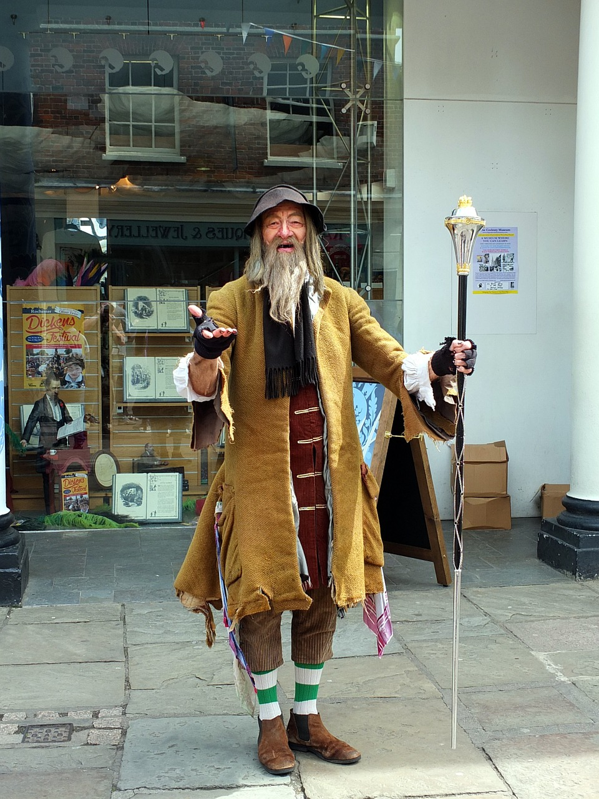

T&D, éradication à la demande
Track & Destroy fut créée il y a plusieurs siècles, en 1630 par Lord Volmort, suite à la plus importante invasion que l'humanité a connu jusqu'à maintenant.
Ce fut une bataille de grande ampleur que nous avons gagné mais nous sommes toujours en alerte.
Depuis ce moment, nous développons et transmettons notre savoir-faire et grâce à notre magicien, nos armes ont des décennies d'avance sur la technologie actuelle.
Notre principal objectif est d'éradiquer toutes créatures surnaturelles et dangereuses, qui pourraient instaurer le chaos dans le monde.
Ainsi, pour nous aider à atteindre nos ojectifs, nous avons notre équipe d'élite.
Le magicien et ses 5 "trackers"
Voici notre équipe d'élite:

Bonjour, je suis le magicien Gumbledore! J'existe depuis la création de T&D et je me charge de créer et développer les armes.

Salut! je suis Rocker, je suis nouveau dans l'équipe mais déjà considéré comme un chasseur prometteur de créatures surnaturelles.

Bonjour camarade, je suis Dark Widow. Née en Russie et accusée d'espionnage, j'ai décidé de devenir chasseuse il y a déjà 10 ans.

Hey! Je suis Mr Van Deta, suite à la mort de mes parents, tués par des créatures, j'ai décidé d'intégrer l'équipe pour me venger.

Ni hao, je suis Hulan! Née en Chine et reniée par mes parents, j'ai trouvé une nouvelle famille et un nouveau but en intégrant cette équipe.

Bonjour, je suis Raider! Trackers de générations en générations, la chasse et l'éradication des créatures sont dans mon sang.
Notre blog
Voici nos dernières plus importantes interventions avec les images des créatures éliminées:

Paris, le 03 Octobre 2021
Cette créature appelée "Arachnide", pesait plus de 200kg et atteignait 3 mètres de hauteur, a été l'une des plus difficiles à tracker et éliminer.
En effet, plusieurs attaques se sont déroulées dans la région, notamment dans des centres commerciaux.
Ainsi, de nombreux témoignages ont pu être récupérés comme celui de Jennifer qui nous déclara: "j'ai cru mourir, j'ai couru pour aller me cacher
et attendre l'intervention de T&D. Heureusement pour moi, ils sont arrivés vite et ont pu gérer la situation."

Lille, le 29 Septembre 2021
Ça est apparu dans les rues, près d’une école où Track & Destroy est intervenu la semaine dernière.
Nous avons constaté une recrudescence de la peur des clown dans le quartier ces derniers jours, à quoi est-elle dûe ? Nous ne le saurons probablement jamais.
Toujours est-il que la peur attire les monstres, c’est probablement l’élément qui a déclenché l’arrivée de Ça dans le quartier.
Monsieur H, un riverain concerné nous a expliqué : "Les enfants qui disparaissent, je dis pas… mais les ballons rouges et les bateaux dans le caniveau : non !
Ça dérangeait ma poupette dans sa sortie matinale. Il fallait faire quelque chose !”

Rouen, le 26 Septembre 2021
Nous avons été appelés pour éradiquer un troupeau de démogorgons qui avaient pris en chasse la famille B. Les créatures étaient des spécimens adultes de plus de 2m de haut attirés par les effluves du boeuf bourguignon dominical.
Ils avaient déjà été aperçus errant sur les quais en bordure de Seine et attaquant les silos de la zone indutrielle.
Après notre intervention, les démogorgons ont été renvoyés dans le monde de l’autre côté, Monsieur B nous raconta son expérience : “Track & Destroy nous a sauvé la vie ! Je n’avais jamais vu de tels monstres chez nous. J’aurais préféré avoir préparé une blanquette.”

Bruxelles, le 25 Septembre 2021
Chucky a de nouveau sévi dans la banlieue Bruxelloise. Il avait probablement été attiré par la concentration de coupe-frites de la région et a profité de l’amour d’un enfant pour les poupées et la friture pour se faire adopter par le fils de madame F.
Track & Destroy est intervenu rapidement et a fait disparaître l’horrible jouet possédé à l’aide du lance-flammes amélioré par Gumbeldore.
Madame F témoigne : “C’était horrible, cette poupée n’arrêtait pas de rire et de me faire des croche-pattes dans la cuisine. J’ai mis du temps à comprendre ce qui se passait, merci Track & Destroy de nous avoir sauvés et informés sur les dangers que nous courrions. J’aurais aimé les contacter plus tôt !"

Marseille, le 16 Septembre 2021
Invasion de noiraudes dans une école marseillaise ! Chaque matin, les enseignants avaient la désagréable surprise d’entrevoir des nuées sombres et mouvantes en entrant dans leur classe.
Il s’avère que les enfants étaient trop calmes dans cette école, ce silence créant un environnement propice à la multiplication de ces petits monstres.
Track & Destroy a organisé un spectacle de clown dans l’école afin que les enfants rient aux éclats et que ce bruit joyeux fasse fuir les noiraudes.
Quelques enfants sont désormais atteints de coulrophobie, mais le jeu en valait la chandelle.
La directrice de l’école nous a confié : "À choisir, j’aurais peut-être préféré que les enfants restent calmes, mais j’ai dû céder face à la pression de l’équipe enseignante.
J’admire cependant l’efficacité avec laquelle Track & Destroy a géré la situation, je garde votre carte. Veuillez m’excuser, je dois aller acheter un casque anti-bruit.”

La Bourboule, le 7 Septembre 2021
Un appartement a été victime d’une génération spontanée de Legos®. Monsieur K, 35 ans, vivant encore chez ses parents témoigne : “Je n’ai pas compris, j’ai commencé à acheter des boîtes de Legos® pour le plaisir et c’est devenu compulsif, il m’en fallait toujours plus, il me fallait des vitrines pour les exposer et des décors pour les mettre en valeur.
La cave de mes parents est pleine de cartons d’emballage - il faut les conserver pour que ça garde de la valeur.”
Malheureusement, monsieur K n’était pas au courant que les Legos® ont la fâcheuse tendance de se multiplier dès que le terrain leur est propice. Très vite, toute la famille a dû garder ses chaussures H24, mais ça n’a pas suffi.
Après une visite aux urgences suite à une blessure causée par une urgence nocturne, monsieur K a fait appel à Track & Destroy qui a pu régler le problème en une journée grâce à 168 sachets à zip.